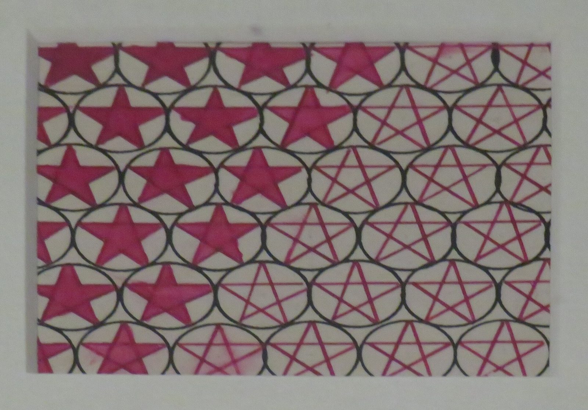

References / Textile / 348
Textile design with stars in circles
Lyubov Popova’s design for a printed fabric repeats red stars inside black overlapping ovals and changes them from solid to line as the pattern moves across.
- Source
- Wikidata: Tissu imprimé à motif d’« étoiles dans un cercle »
- Creator
- Lyubov Popova
- Made
- 1923 (Wikidata)
- Style
- Constructivism (agent-proposed, not yet reviewed by a person)
- Moods
- Geometric, rhythmic, industrial
- Evidence
- Downloaded and inspected a gallery photograph by Sukkoria on Wikimedia Commons (3228 × 2256 px, viewed at 1920 px), taken in the exhibition Rouge. Art et utopie au pays des Soviets, Grand Palais, Paris, 2019. The photograph is slightly soft and taken through glazing. Wikidata names the State Tretyakov Gallery as the collection; no inventory number is recorded.
- Reviewed
- Rights
- Open license, stored. License: CC-BY-SA-4.0. Rights policy

Context
Wikidata records the work as a design by Lyubov Popova, dated 1923, in the collection of the State Tretyakov Gallery. Wikidata.
In 1923 an official appeal asked artists to design prints for the Soviet textile industry. Popova, Varvara Stepanova, and Alexander Rodchenko were among the first to respond. V&A, T.213-2016. See Stepanova’s printed flannel.
Observed
- A lattice of overlapping black outlined ovals covers the sheet in staggered rows.
- Each oval holds a five-pointed star in a magenta-red. In the left part the stars are solid; toward the right they become open pentagrams drawn in thin red lines.
- The red stars and the black ovals overlap, so the stars appear to pass behind and in front of the lattice.
- The ground is unpainted off-white paper. Red and black are the only colors.
Why it belongs
The design reduces a textile print to the same two inks as the posters and uses the change from solid to outline as its only variation, a rule-based system rather than decoration.
The star is a Soviet emblem. The style record advises against using such emblems as decoration today; the geometry and the solid-to-outline change are the parts to reuse.
Borrow
Make a pattern from one elementary shape and one outline lattice, and let the shape change from solid to outline across the surface.
Limit a pattern to one hue plus black on an unprinted ground.
Measured
Machine-extracted by tools/image-traits.py on . Full measurement.
- Mean chroma
- 0.08
- Palette
- #8d8b80 33%
- #a5a7a2 21%
- #7c2d46 10%
- #817f79 5%
- #979692 5%
- #6c3947 3%
- #353230 3%
- #463f3e 3%

